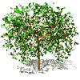

Annual tree planting :
Annual tree planting :
Annual tree planting :
Each year, the association organises a vast program of tree planting (around
2000 trees) on the slopes of Sainte-Victoire and its surrounds. Over
the past 12 years, approximately 90 000 trees have been planted thanks
to the energy of personnel from our sponsors' firms, volunteer members
of the A.R.P.C.V. and of other sister associations. About 200 people participate
in this annual tree planting program.
Studies
undertaken by Michel Thinon a research scientist at the CNRS (National
Centre for Scientific Study) and a Committee Member of the A.R.P.C.V.,
reveal that, originally, the Mediterranean forest was constituted by deciduous
species.
Over
thousands of years, general clearing and countless fires have totally transformed
it. Today's shrubland of Alep pines and prickly vegetation has nothing
in common with its Neolithic ancestor.
Indeed,
these pine forests have gradually taken over due to their spontaneous growth
after fire. Pines taken root easily in light soil but such species
are never chosen in our tree planting program precisely because they and
their accompanying undergrowth are highly inflammable and also frighteningly
efficient carriers of the slightest flame. In addition, their needles do
not aid the production of humus, a natural soil fertiliser.
 The
choice of site
The
choice of site
The sites chosen by the A.R.P.C.V. are principally the areas damaged by the fires of 1986 and 1989, and situated in the public domain, that is belonging to villages or state. The undergrowth was totally blackened and the trees themselves often burnt to cinders.
 Preparing
the ground:
Preparing
the ground:
Before
all else, each site has to be carefully cleared of any dead wood, weeds,
growing shrubs. The ground is then ready for sub-soiling.
This
stage is essential where the soil is deep as the ground can be aired to
a depth of 60 - 80 cm. making it lighter and looser. This facilitates the
establishment of young roots. Sub-soiling also favours the penetration
of rain which then accumulates at the base of the roots, one of the principal
conditions for successful growth in our dry Mediterranean climate.
The
next step is pegging the ground. Wooden stakes are placed where each
tree is to be planted. This aids in regulating the density of the forest
and the stakes serve as a guide to visitors and gardeners alike through
the plantation. They are particularly useful for directing children
who often help us in our endeavours especially during the early growth
period when the surrounding vegetation can become very dense, masking the
actual trees.
 The
choice of species:
The
choice of species:
The tree planted have been chosen according to strict criteria :
- their
adaptation to the ecosystem
- their
toughness in relation to the risks of fire
- their
utility as a soil nutrient
The A.R.P.C.V.'s
aim being to restore the forest to its original form within thirty years,
the following deciduous species are used :
the
flowering ash, white beam, Montpellier maple, sorb tree and the white oak.
These
are all native to the region, are grown in local nurseries and once established,
have the capacity to protect themselves efficiently against fire.


flowering ash
White oak
( one year old)
 Planting:
Planting:
The trees are planted mainly by staff members of sponsors' firms, associations of walkers, controlled by volunteers from our Association. However, the initiative is open to the public at large who are always welcome. Each new planter is given careful planting instructions by the "professional" responsible for a particular sector.
The young
trees are planted in alternation at a distance of 1m 50 from each other
in the following order : 2 flowering ash, 1 sprouted white oak acorn, 1
sorb, 2 beam, 1 acorn.
Such
a system ensures the correct rhythm of growth. The flowering ash
provides through its rapid growth the protection of the secondary species,
which in turn offer the shade necessary for the white oak to slowly mature.
The
reason for such a small spacing between trees is that when the trees have
grown up, they shadow completly the ground underneath, and prevent the
development of the highly combustible low sparse vegetation.
Great
care is taken to uproot any green or prickly oak which may have rooted
itself spontaneously, these being highly inflammable.
Particular
attention is also paid to the protection of the young plants once in the
ground. Each one is surrounded by a transparent plastic covering
which acts both as a greenhouse and a protection against dryness and animals.
These conserve moisture and favour individual growth as the young plant
cannot be choked by surrounding weeds.
| Since the first plantations more than 90% of the trees are still going on |
 Some
of the trees planted ten years ago by the association are now very high
(2 to 3 meters) and are already producing seeds, which will propagate naturally
the forest...
Some
of the trees planted ten years ago by the association are now very high
(2 to 3 meters) and are already producing seeds, which will propagate naturally
the forest...
-------------------------------------------------------------------------------------------------------------------------------
flowering ash (3m) zoom on the flowers during spring
(*) These actions are possible thanks to our sponsors:
- Conseil Général des Bouches-du-Rhône
- Gaz de France
- Banque Populaire Provençale et Corse
- STMicroelectronics Rousset
- Patagonia (USA and France)
 The success of the method...
Thanks to the success of the method, as well as to the knowledge of the association's members, other associations working for environment are asking for our aid to reforest other area devasted by fires in Provence.
In 2000
for instance, the association took the leadership of the tree planting
operation done with many local volunteers, in the famous Calanques between
Marseille and Cassis.
----------------------------------------------------------------------------------------------------------------------------
 Plantation maintenance.
Plantation maintenance.
A group of volunteers meets regularly to look after the plantations . The ground is cleared of unwanted vegetation around the trees. After 4 or 5 years, the plastic protections are removed since the tree can survive by itself.
Every ten years the plantations
are thinned out to avoid the effect of rectilinear planting.
Spontaneous rooting allied
to growth failure also breaks the somewhat inevitable regularity of the
actual plantation plan.